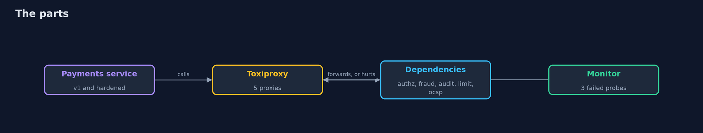
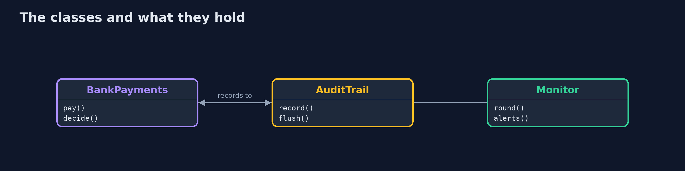
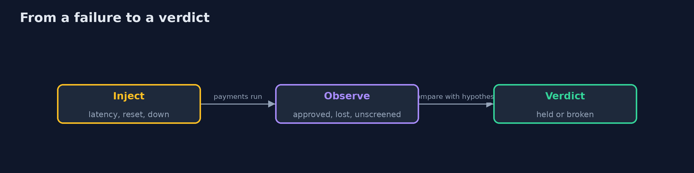
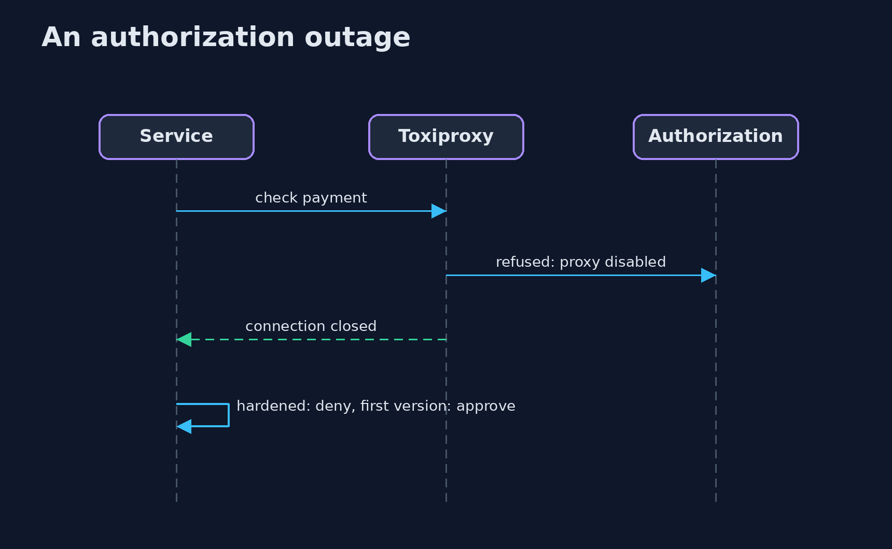

Security Chaos Engineering
src/main/java/com/jk/explore/security/securitychaos/
├── AuditTrail.java Where the decisions of the payments service are written for the auditors
├── Backends.java The five services a payment depends on, each on its own port: authorization, fraud scoring, the audit sink, the rate-limit store and the revocation responder
├── BankPayments.java A bank payments service with five controls, each a call to a dependency: rate limit, certificate revocation, authorization, fraud score and an audit trail
├── Decision.java What the service did with a payment, and whether the fraud service really scored it
├── DroppingAudit.java The first version: a small in-memory buffer and a sender thread; what cannot be sent or does not fit is dropped, and nobody is told
├── Experiment.java One chaos experiment: a hypothesis about a control, a failure to inject, and what the scenario will measure
├── Fault.java A failure Toxiproxy can inject between the service and a dependency
├── Http.java A client with a hard deadline for the whole call, body included
├── Lab.java Runs the experiments against one version of the service, through Toxiproxy, and keeps the scoreboard
├── Monitor.java Probes the health endpoint of each dependency; N failed probes in a row raise one alert
├── Payment.java A payment request: who pays, how much, and the serial of the client certificate that signed it
├── SecurityChaosDemo.java Chaos experiments on the security controls of a bank payments service: steady state, injected failure, observation, verdict
├── Sh.java Runs a program and returns what it printed, whether it worked or not
├── SpooledAudit.java The hardened version: the record is written to a journal file first, then sent
└── Toxiproxy.java A Toxiproxy container started from Java and driven through its HTTP API
A bank payments service has five controls that each call a dependency: a rate limit, a revocation check, authorization, a fraud score and an audit trail; with Toxiproxy between the service and each dependency, 10 experiments (down, slow, hung, reset, trickle, slow close) each test 2 hypotheses, that the control holds and that an alert fires; the first version holds 2 of 20: it approves 6 of 6 payments with authorization down, slow or reset, 6 of 6 without a fraud score, 6 of 6 with a revoked certificate and 40 of 40 from one account with the limit at 5, loses 20 of 20 audit records and raises 0 alerts; the hardened version holds 20 of 20: it approves 0 of 6, holds 6 of 6 payments for review, approves 5 of 40, loses 0 of 20 audit records and raises an alert after 3 failed probes; it still approves 1 of 1 payment whose certificate was revoked during an outage after a good answer was cached.
A security control is a dependency like any other: it is a call over a network, and it can be slow, hung, reset or gone. What the service does then is a decision somebody made, often by accident. This project asks the question by experiment. A bank payments service (built with the JDK HttpServer) calls five dependencies through Toxiproxy, which runs in Docker and is driven from Java through its HTTP API. Each of 10 experiments states a steady state, injects a failure, observes and gives a verdict, for two hypotheses: the control fails closed, and an alert fires. The first version has planted weaknesses; the hardened version fixes them. The demo needs Docker and the ghcr.io/shopify/toxiproxy image (a few MB) and is tagged integration: ./gradlew integrationTest.
What it shows: - Fail open. With authorization down, slow or reset the first version approves 6 of 6 payments; the hardened one approves 0 of 6. - Unscreened payments. With the fraud service hung or on a trickle 6 of 6 are approved without a score; the hardened version holds 6 of 6 for review. - Silent loss. A burst of 20 decisions while the audit sink is down loses 20 of 20 records in the first version and 0 of 20 in the hardened one. - Limits and revocation. One account gets 40 of 40 payments through a limit of 5 when the store resets, against 5 of 40; a revoked certificate is approved 6 of 6 when the responder is down or slow, against 0 of 6. - Alerts. The first version raises 0 alerts; the hardened version raises one after 3 failed probes, and none for a slow close that costs nothing. Scoreboard: 2 of 20 hypotheses held against 20 of 20.
Maps to: NIST SP 800-53 SI-13, SC-24 (fail in known state), AU-5 (response to audit processing failures), CP-10 · OWASP ASVS V7 and V11 · MITRE ATT&CK T1562 (impair defenses) · Principles of Chaos Engineering.
The idea in everyday terms
A fire drill for the locks. You do not wait for a real power cut to find out whether the doors open or stay shut: you cut the power on purpose, with the building watched, and write down what each door did and whether the alarm rang.
The scenario
A bank's payments service checks every payment against five controls. In a real incident the dependencies fail one at a time. The demo breaks them one at a time on purpose, and counts what the service approves, what it loses and what it reports.
Run
./gradlew run
The demo tells the story in 5 acts, each printing exact numbers that the tests check:
| Act | What it shows |
|---|---|
| 1. Steady state | Before every experiment four ordinary payments give the expected answers and 4 of 4 audit records arrive. |
| 2. Authorization and fraud | The first version approves 6 of 6 payments with authorization down, slow or reset, and 6 of 6 without a fraud score; the hardened one approves 0 and holds 6 for review. |
| 3. Audit, limit and revocation | The first version loses 20 of 20 audit records, lets 40 of 40 through a limit of 5 and approves 6 of 6 revoked certificates; the hardened one loses 0 and approves 5 of 40 and 0 of 6. |
| 4. Does anybody hear it? | The first version raises 0 alerts; the hardened version raises one after 3 failed probes, and none for a slow close. |
| 5. The scoreboard | Hypotheses held: 2 of 20 for the first version, 20 of 20 for the hardened one, with one gap measured: 1 of 1 certificate revoked during an outage is approved. |
Test
./gradlew test
18 tests in DemoRunsTest, ExperimentTest, MonitorTest, PaymentsTest. The service, the audit trails and the monitor are tested with stub dependencies and no Docker. The demo starts Toxiproxy (./gradlew integrationTest).
What the simulation got right, and what it left out
Toxiproxy is real and runs in Docker. The payments service and its five dependencies are the project's own small programs; the failures are injected on the real connections between them. Nothing is simulated in the service's own code.
Technologies and versions
Every version below is pinned in the project's build files and was the latest stable release when the project was built.
| Technology | Version | Used for |
|---|---|---|
| Java | 25 | the language and runtime; a Gradle toolchain finds or downloads the JDK |
| Gradle | 9.8.1 (wrapper) | build and run; nothing to install, the wrapper downloads it |
| org.junit.jupiter:junit-jupiter | 6.1.3, set by junit-bom | JUnit 5: the tests (tests only) |
| org.junit.platform:junit-platform-launcher | 6.1.3, set by junit-bom | JUnit platform launcher, which Gradle needs to run the tests (tests only) |
| videokit | repository tool (tools/videokit) |
the narrated video and animation: Piper en_US-amy-medium, speed 0.8, longer pauses (the amy-slow voice) |
Learning Material
| Document | What it is for |
|---|---|
| Problem statement | the situation and what the project must show |
| Prerequisites | what you need to know first |
| Security Chaos Engineering, explained | the acts in prose |
| Session guide | a one-hour lesson with exercises |
| Animated walkthrough | the acts step by step, narrated |
| Threat model | what is protected, who could harm it, and how, using STRIDE |
| Spec | what this project must be true of |
| Expected output | the golden demo output every test and every port checks against |
The idea in one picture
The service reaches every dependency through a proxy that can hurt it.

Where each piece sits
The service, its audit trail and the monitor.

How the data moves
Each step produces something that can be counted.

Who calls whom, in order

Video
video/security-chaos-engineering-explained.mp4 (with .m4a audio and .srt subtitles) is built by video/build_video.sh. Rendered media is not committed.
What it costs
- Experiments need a safe place: a copy of the service, not production at first.
- Fail closed costs customers: payments wait or are refused while a dependency is down.
- Probes see failures, not every degradation: a slow close passes them.
- A cache or fallback has its own gap, like a certificate revoked during an outage.
- Injected failures are tidy; real ones are messier.
When this is too much
A service with no dependencies that guard anything needs no drill. Start with the controls that, if they quietly stopped, would turn a bad payment into an approved one.
Where you have already met this
- A try and catch that returns true.
- A timeout that falls back to allow.
- A log buffer that drops when it is full.
- A revocation check that soft-fails.
Where this sits
This is a project of the resilience-and-recovery module. The earlier modules built the controls; this one asks what they do when they are hurt. It uses the same idea as ransomware resilience: assume the failure and measure the response.